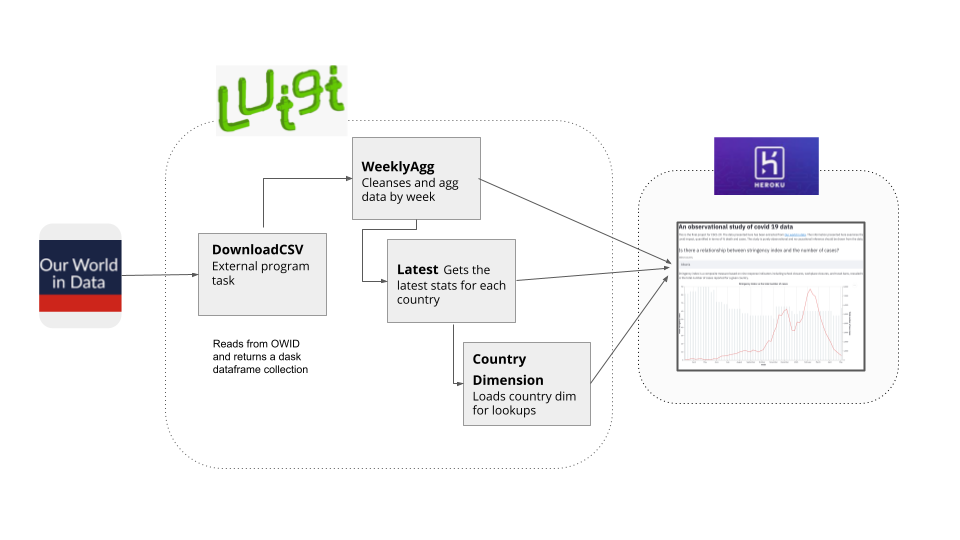

CS29 COVID Visualizer¶

This is the final project for CSCI-29. The data presented here has been extracted from Our world in data. The information presented here examines the relationship between different socio-economic variables and covid impact, quantified in terms of % death and # of confirmed cases.
Link to the Web App: https://csc29-covid-viz.herokuapp.com/
Sources¶
The primary data source for this analysis is OWID (Our world in data database). I initially built scrapers which scrapped additional geographic attributes from the data but due to lack of referential integrity, I excluded them from the analysis.
Architecture overview¶
The image provided below highlights the technical architecture used for the project.
- Design highlights:
- Single responsibility principle and atomic writes via Luigi scaffolds
- Microsciences for isolated env for data extraction
- Usage of Python framework Streamlit and altair package as the visualization UI
- Automatic testing and deployment to Heroku via Travis
- Document generation using sphinx
Limitations¶
- The study is purely observational and no causal inference should be drawn from the data